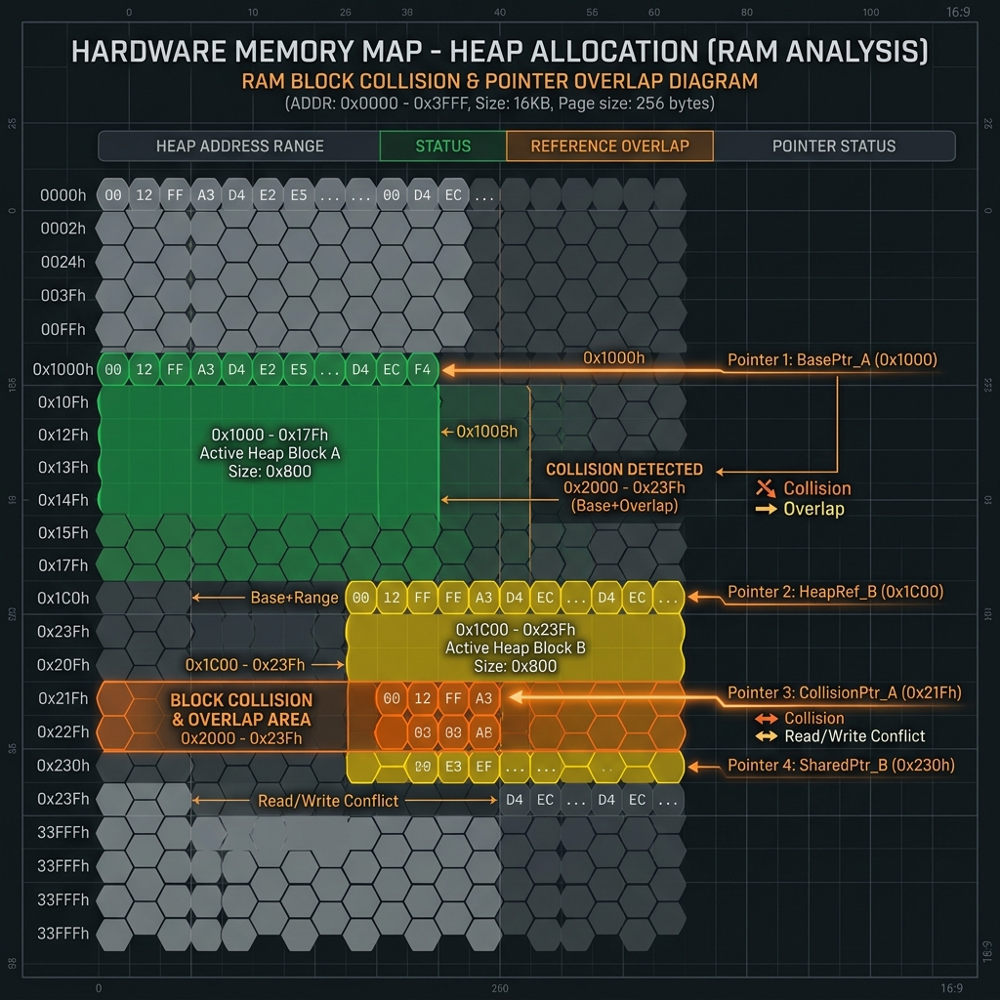

Série: Blindagem de Sistemas — Módulo 02
A Praga Silenciosa: Use-After-Free e Bugs de Memória

Nota do Desenvolvedor: O caso a seguir representa uma simulação prática de engenharia com base em ameaças e ocorrências reais do ecossistema corporativo.
1. O Incidente: O Roteador de Borda e o Ponteiro Fantasma
Imagine o seguinte cenário abstrato para facilitar a visualização do fluxo de dados: o roteador do seu sistema possui gavetas numeradas organizando informações exclusivas de cada cliente. Em uma operação de sucesso, os dados entram e saem das gavetas corretas. O erro a seguir fez com que o sistema, por engano, entregasse a chave de uma gaveta já esvaziada a um novo cliente, que acabou lendo arquivos confidenciais deixados para trás.
Durante uma auditoria regulatória, a equipe de infraestrutura de rede identificou uma anomalia em um dos roteadores de borda responsáveis pelo balanceamento de carga. O tráfego de dados de múltiplos clientes começou a misturar-se de forma intermitente nos cabeçalhos de rede HTTP. O culpado foi um erro clássico de gerenciamento de memória em C++ no parser de pacotes.
Ao processar um pacote com formato malicioso, a aplicação liberava a memória de uma estrutura de controle, mas falhava em zerar o endereço apontado por aquela variável (ponteiro órfão). Ao alocar instantaneamente o próximo cabeçalho na mesma faixa física da memória RAM, a aplicação lia dados residuais e sobrescrevia tokens de sessão ativos de outros usuários, resultando em um vazamento catastrófico de privacidade de dados.
"Use-After-Free é a típica burrice de recepção de hotel: o atendente dá a chave do quarto 102 para um novo hóspede sem avisar que o hóspede antigo ainda está lá dentro pegando as malas. Em software, o invasor é o hóspede novo que entra no quarto e rouba o que o antigo deixou na mesa. Não dependa de torcer para que o hóspede seja honesto; a recepção do sistema operacional é o gerente que deveria travar a porta para impedir isso."
2. O Diagnóstico: A Mecânica de Stack e Heap

Para desmistificar o risco da aplicação sem jargões acadêmicos pesados, pense na memória RAM através de uma analogia física de armazenamento:
- Stack (Pilha / A Mesa de Trabalho): Funciona como a mesa de trabalho física do programador. Ela é rápida e limpa de forma totalmente automática. Quando a tarefa da função termina, tudo sobre a mesa é jogado no lixo instantaneamente.
- Heap (Monte / O Depósito de Caixas): Funciona como um grande depósito nos fundos da empresa onde guardamos caixas grandes de dados dinâmicos. Essa área exige que você solicite a alocação de espaço e, o mais importante, lembre-se de avisar ao gerente para retirar as caixas de lá quando não forem mais usadas.
O conceito de Use-After-Free (Uso de Memória Órfã) descreve exatamente a situação em que o software joga fora uma caixa do depósito (libera o espaço no Heap), mas o programador continua acreditando e escrevendo no código como se a caixa ainda estivesse ativa no mesmo endereço original (deixando o ponteiro na Stack ativo).
Esse endereço liberado é recolocado imediatamente no catálogo de alocação do sistema operacional. Quando o software tenta acessar o ponteiro antigo, ele lê dados que agora pertencem a outra parte do sistema.
3. Mitigação: Como Corrigir na Prática
Para mitigar esses riscos sem reescrever todo o software antigo do dia para a noite, adote as seguintes práticas estruturais:
- Smart Pointers em C++: Substitua ponteiros brutos por ponteiros inteligentes (como
std::unique_ptroustd::shared_ptr) que gerenciam a contagem de referências e limpam a memória automaticamente ao final do escopo.std::unique_ptr<Cliente> c = std::make_unique<Cliente>(); // Limpeza automática garantida - Zerar Ponteiros (Nulling out): Se for inevitável trabalhar com baixo nível puro, certifique-se de que todo comando de liberação seja imediatamente seguido por uma atribuição nula para evitar referências órfãs ativas.
delete usuario; usuario = nullptr; // Evita ponteiro órfão apontando para a RAM liberada
Revisão de Linha de Frente (Checklist do Módulo 02)
- [ ] Diferencie Stack vs Heap: Entenda a mesa de trabalho rápida vs o depósito de caixas dinâmico.
- [ ] Evite Ponteiros Órfãos: Nunca tente acessar um endereço de memória física que já foi liberado.
- [ ] Utilize Smart Pointers: Deixe que o compilador gerencie os escopos de limpeza em C++ de forma inteligente.
- [ ] Zere referências em baixo nível: Associe sempre o valor
nullptra variáveis após o comando de delete. - [ ] Teste com Validação Dinâmica: Monitore o comportamento ativo da RAM para interceptar vazamentos antes do deploy.
Dicionário de Trincheira (Para Leigos e Executivos)
- Pilha de Execução (Stack): A mesa de trabalho física rápida do computador. Armazena variáveis locais e simples da tarefa atual, sendo limpa e redefinida de forma 100% automatizada e instantânea assim que o escopo da função é concluído.
- Depósito Compartilhado (Heap): A área de alocação dinâmica e de longo prazo da memória RAM. A aplicação solicita um box específico de dados pesados e é responsável por sinalizar ao sistema operacional quando o box deve ser desocupado.
- Uso de Memória Órfã (Use-After-Free): O erro grave de engenharia de software que ocorre quando a aplicação tenta ler ou escrever em um endereço de Heap que já foi liberado, permitindo ler lixo eletrônico ou dados de outros usuários.
- Gerenciador de Acesso Automático (Smart Pointer): Um encapsulador lógico de memória que rastreia referências e executa de forma autônoma a devolução dos blocos ao sistema operacional, eliminando a falha humana de esquecimento.
- Estouro de Buffer (Buffer Overflow): A vulnerabilidade mecânica que ocorre quando um programa grava mais informações em uma área de armazenamento temporário do que ela suporta, vazando os dados excedentes para partições vizinhas e alterando as instruções do processador.
— Fim do Módulo 02. Continua no Módulo 03: O Cinto de Segurança do Rust. Índice da série em: Chamada e Índice.